Header menus (every page) /

NAV-SVC-ARCH
Services menu · Architectural Design
ARCH-018 Grand Stone-Pier Entrance Villa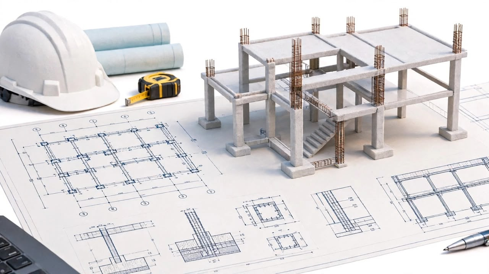
NAV-SVC-STR
Services menu · Structural Engineering
PROC-004 Structural drawings with RCC frame model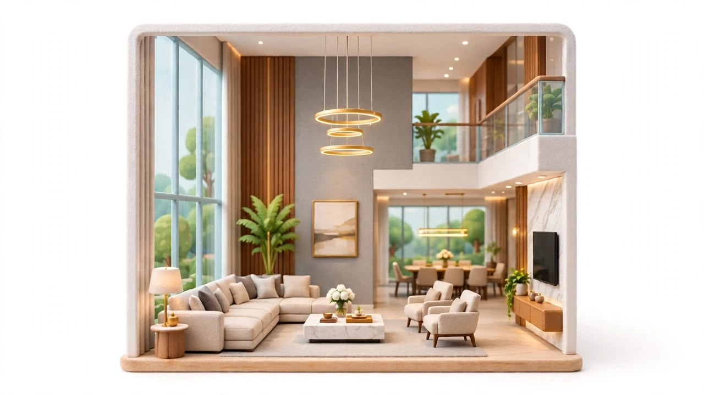
NAV-SVC-INT
Services menu · Interior Design
INT-001 Double-height living room — 3D interior design
NAV-SVC-DB
Services menu · Design & Build
ARCH-008 Cantilevered-Roof Garden Residence
NAV-SVC-STEEL
Services menu · Steel Structures
STEEL-002 Portal Frame Erection
NAV-SVC-PEB
Services menu · PEB Structures
PEB-001 Logistics Warehouse with Dock Canopy
NAV-SVC-FACADE
Services menu · Facade Engineering
FACADE-001 Orange Fin Facade Office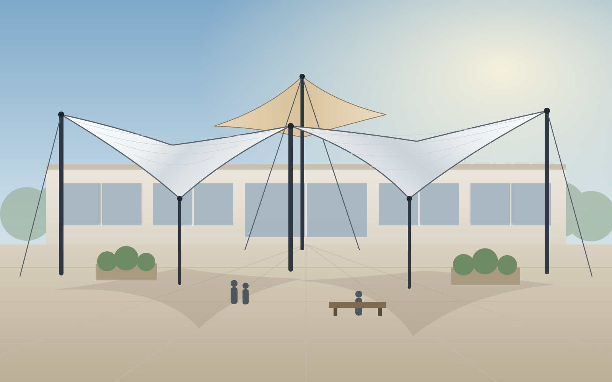
NAV-SVC-TENS
Services menu · Tensile & Special
TENS-002 Tensile shade sails over a courtyard (illustration)⚠ placeholder copy

NAV-PRJ-RES
Projects menu · Residential
ARCH-020 Infinity-Pool Cantilever Villa
NAV-PRJ-COM
Projects menu · Commercial
ARCH-023 Corporate Office with Pergola Crown
NAV-PRJ-IND
Projects menu · Industrial
PEB-003 Industrial Facility with Glazed Entrance
NAV-PRJ-PEB
Projects menu · PEB Structures
PEB-002 PEB Distribution Centre
NAV-PRJ-STEEL
Projects menu · Steel Structures
STEEL-001 Multi-Bay Steel Frame
NAV-PRJ-FACADE
Projects menu · Facades
FACADE-003 Feature Colour Facade Residence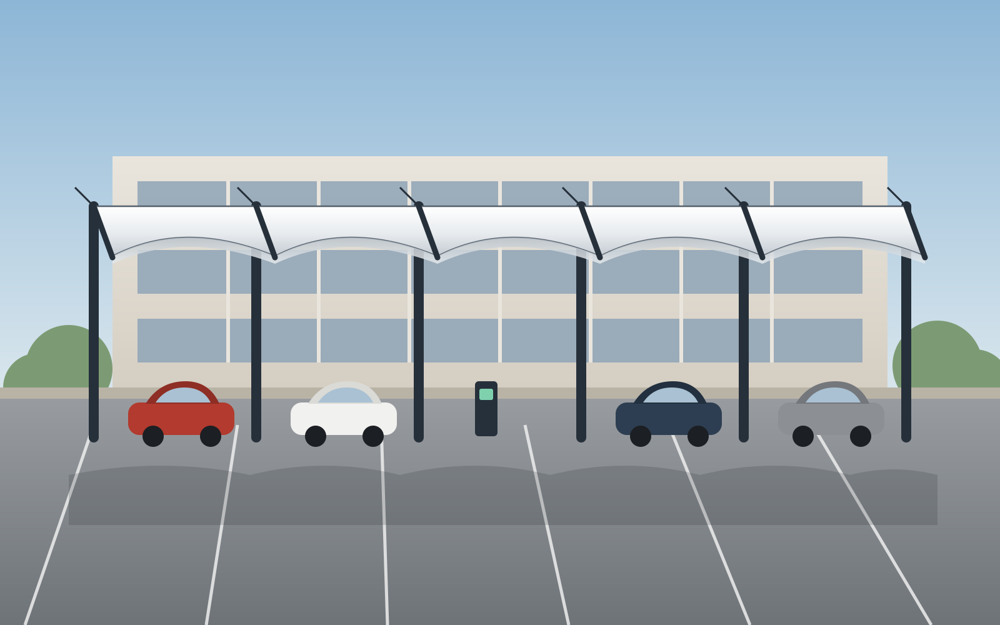
NAV-PRJ-TENS
Projects menu · Tensile Structures
TENS-004 Cantilever car-park canopy (illustration)⚠ placeholder copy
NAV-PRJ-PKG
Projects menu · Packages & Estimate
PEB-001 Logistics Warehouse with Dock CanopyProject journey (Home + Packages) /#journey
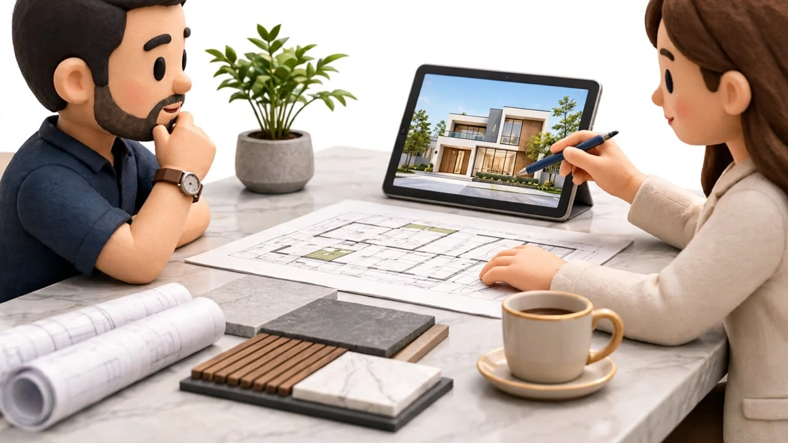
JOURNEY-STEP-1
Design journey · Step 1 Consultation & brief
PROC-001 Consultation & brief — client meeting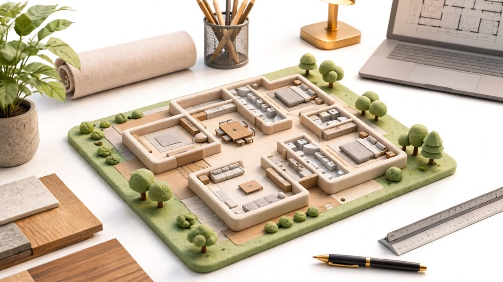
JOURNEY-STEP-2
Design journey · Step 2 Architectural floor plans
PROC-002 Architectural floor plan model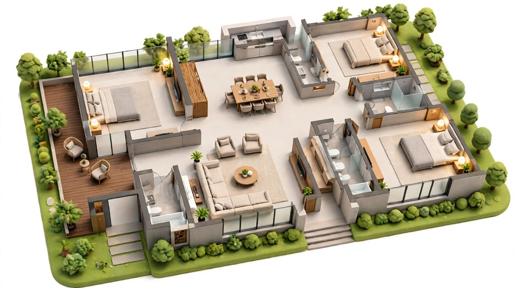
JOURNEY-STEP-3
Design journey · Step 3 3D space layout
PROC-003 3D space layout — furnished floor planJOURNEY-STEP-4
Design journey · Step 4 Structural drawings
PROC-004 Structural drawings with RCC frame model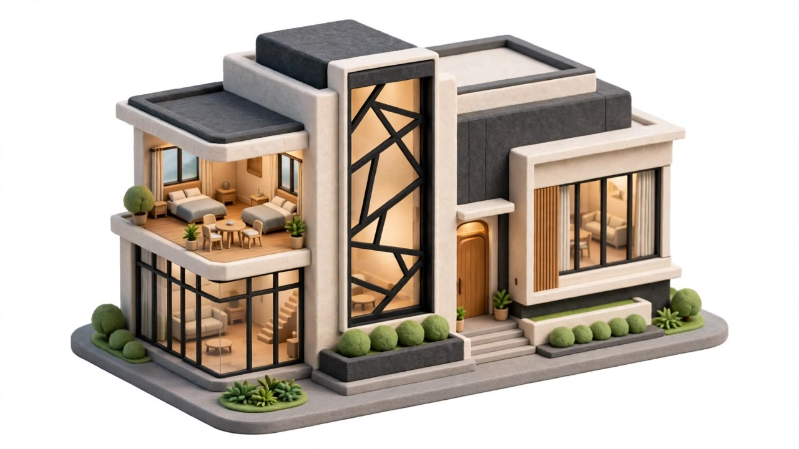
JOURNEY-STEP-5
Design journey · Step 5 3D elevation design
PROC-005 3D elevation design model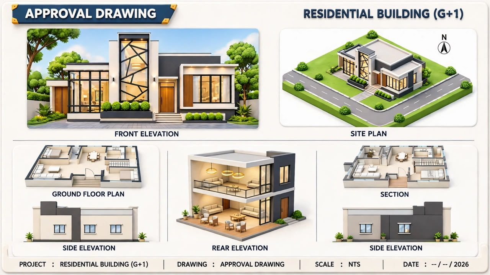
JOURNEY-STEP-6
Design journey · Step 6 Approval drawings
PROC-006 Approval drawing set — residential G+1JOURNEY-STEP-7
Design journey · Step 7 3D interior design
INT-001 Double-height living room — 3D interior design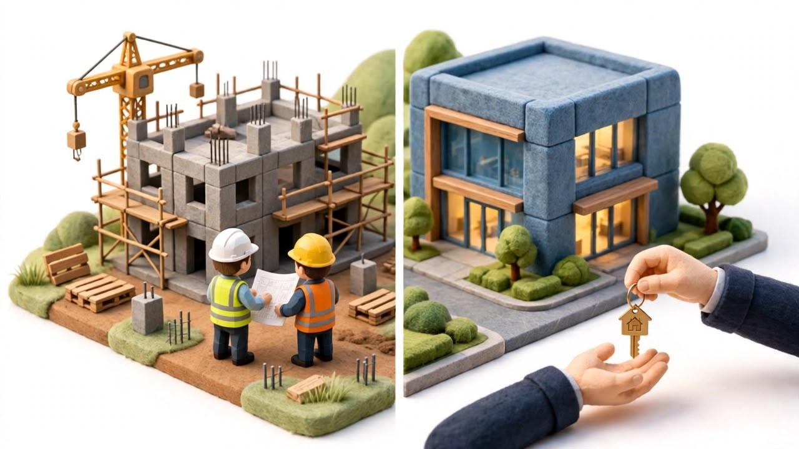
JOURNEY-STEP-8
Design journey · Step 8 Construction & handover
PROC-008 Construction & handover — keys to the clientHome (landing page) /
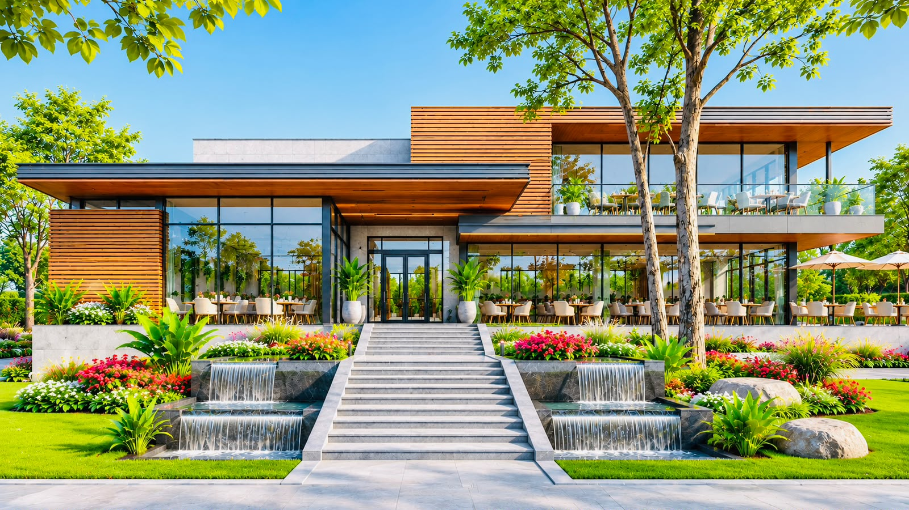
HERO-SLIDE-1
Hero slider · Slide 1 (first image visitors see)
HOME-001 Garden Restaurant Pavilion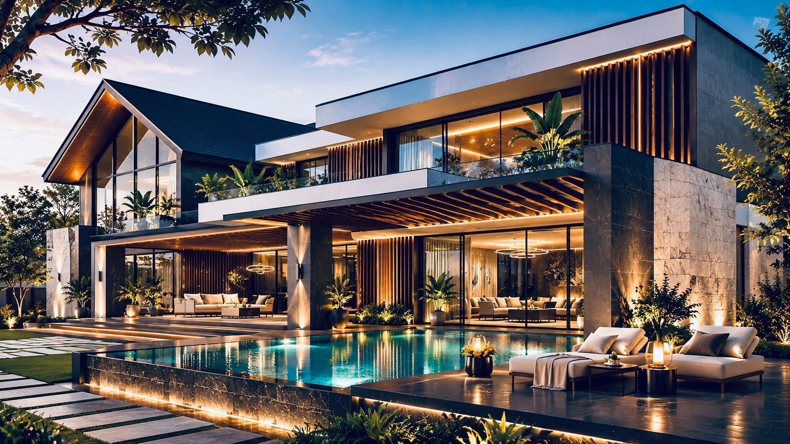
HERO-SLIDE-2
Hero slider · Slide 2
HOME-002 Evening Pool Pavilion Villa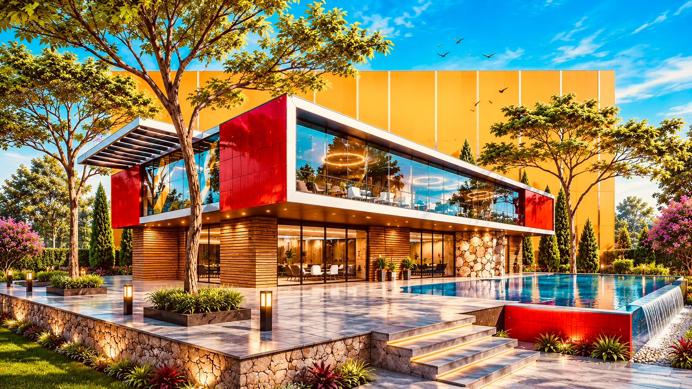
HERO-SLIDE-3
Hero slider · Slide 3
HOME-003 Colour-Clad Hospitality Pavilion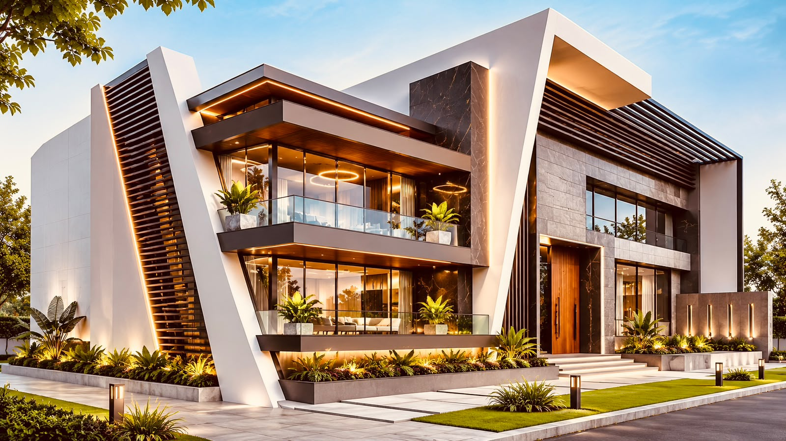
HERO-SLIDE-4
Hero slider · Slide 4
HOME-004 Angular White Villa with Louvred Fins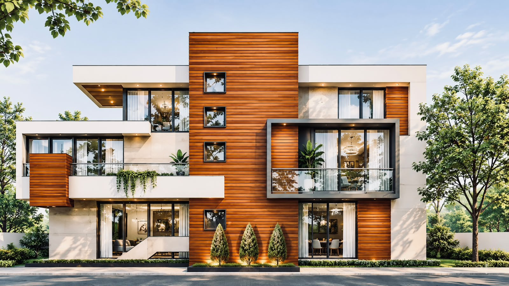
HERO-SLIDE-5
Hero slider · Slide 5
HOME-005 Timber Rainscreen Residence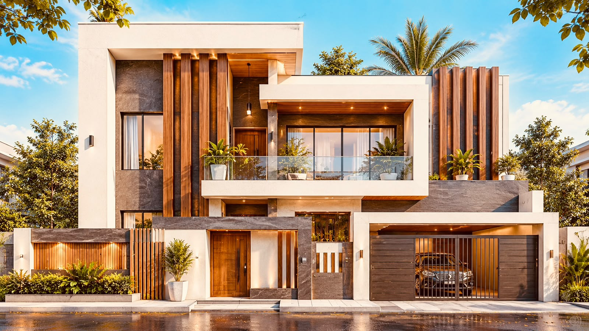
HERO-SLIDE-6
Hero slider · Slide 6
HOME-006 Vertical-Fin Timber Villa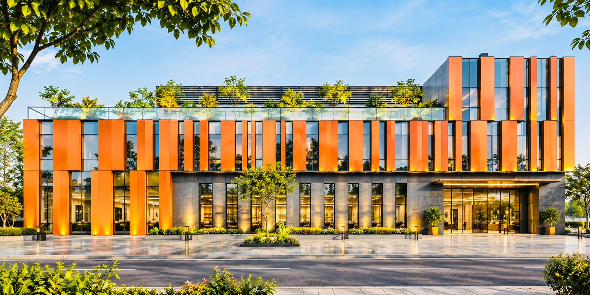
HERO-SLIDE-7
Hero slider · Slide 7
HOME-007 Orange Fin Facade Office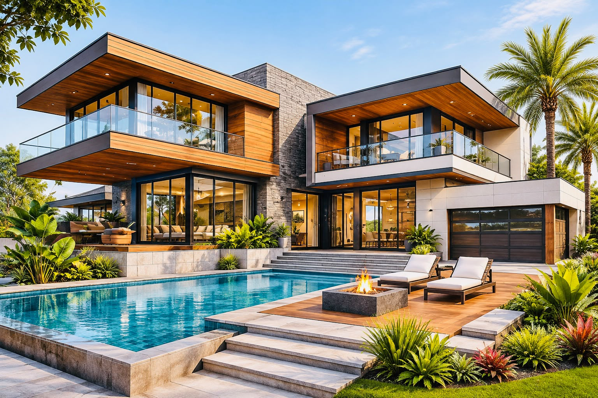
HERO-SLIDE-8
Hero slider · Slide 8
HOME-008 Poolside Timber Cantilever Villa
HOME-ABOUT-1
Who we are · Large image
ARCH-015 Narrow-Plot Stone Townhouse
HOME-ABOUT-2
Who we are · Small overlapping image
PEB-004 Loading Bays and Dock CanopyHOME-SVC-ARCH
Core capabilities · 01 Architecture & Interior
ARCH-020 Infinity-Pool Cantilever Villa
HOME-SVC-STR
Core capabilities · 02 Structural Design
ARCH-029 Mixed-Use Tower on Terraced PodiumHOME-SVC-DB
Core capabilities · 03 Design & Build
ARCH-008 Cantilevered-Roof Garden ResidenceHOME-SVC-PEB
Core capabilities · 04 Steel & PEB
PEB-002 PEB Distribution CentreHOME-SVC-FACADE
Core capabilities · 05 Facades
FACADE-001 Orange Fin Facade OfficeHOME-SVC-TENS
Core capabilities · 06 Tensile & Special
TENS-002 Tensile shade sails over a courtyard (illustration)⚠ placeholder copy

HOME-PROJECTS-FEATURE
Selected work · Large featured project
ARCH-021 Evening Pool Pavilion Villa
HOME-PROJECTS-1
Selected work · Card 1
ARCH-002 Timber-Frame Corner ResidenceHOME-PROJECTS-2
Selected work · Card 2
ARCH-023 Corporate Office with Pergola CrownHOME-PROJECTS-3
Selected work · Card 3
FACADE-003 Feature Colour Facade Residence
HOME-PROJECTS-4
Selected work · Card 4
ARCH-016 Curved Terrace Apartment BuildingHOME-INDUSTRIAL-1
Industrial portfolio · Tile 1 (large)
STEEL-001 Multi-Bay Steel FrameHOME-INDUSTRIAL-2
Industrial portfolio · Tile 2
PEB-004 Loading Bays and Dock CanopyHOME-INDUSTRIAL-3
Industrial portfolio · Tile 3
STEEL-002 Portal Frame ErectionHOME-INDUSTRIAL-4
Industrial portfolio · Tile 4
PEB-001 Logistics Warehouse with Dock CanopyHOME-INDUSTRIAL-5
Industrial portfolio · Tile 5
PEB-003 Industrial Facility with Glazed EntranceHOME-ENGINEERING
Engineering expertise · Side image
STEEL-002 Portal Frame Erection
HOME-SECTOR-1
Industries we serve · 01 Residential & villas
ARCH-017 Poolside Timber Cantilever Villa
HOME-SECTOR-2
Industries we serve · 02 Commercial
ARCH-022 Brick and Glass Retail-Office BlockHOME-SECTOR-3
Industries we serve · 03 Industrial
PEB-003 Industrial Facility with Glazed EntranceHOME-SECTOR-4
Industries we serve · 04 Warehouses & logistics
PEB-001 Logistics Warehouse with Dock CanopyHOME-SECTOR-5
Industries we serve · 05 Manufacturing
PEB-002 PEB Distribution Centre
HOME-SECTOR-6
Industries we serve · 06 Corporate workspaces
ARCH-027 Stone and Timber Commercial Pavilion
HOME-SECTOR-7
Industries we serve · 07 Institutional
ARCH-025 Stone Clubhouse with Reflecting PoolHOME-SECTOR-8
Industries we serve · 08 Special structures
TENS-004 Cantilever car-park canopy (illustration)⚠ placeholder copy

HOME-PKG-RES
Packages · Residential
ARCH-011 Stone and Timber Villa with Plunge PoolHOME-PKG-COM
Packages · Commercial
ARCH-022 Brick and Glass Retail-Office BlockHOME-PKG-PEB
Packages · PEB & steel sheds
PEB-002 PEB Distribution CentreHOME-PKG-TENS
Packages · Tensile fabric
TENS-004 Cantilever car-park canopy (illustration)⚠ placeholder copy

HOME-PKG-DESIGN
Packages · Architectural design
ARCH-006 Colonnaded Contemporary VillaHOME-CTA-BG
Start a project (CTA) · Background image
ARCH-025 Stone Clubhouse with Reflecting PoolAbout Us /about/

ABOUT-HERO
Page header · Side image
ARCH-013 Travertine Glass Residence
ABOUT-PHILOSOPHY
Our philosophy · Image
ARCH-019 Floating-Roof Waterside Villa
ABOUT-APPROACH-1
Our approach · Space first, then form
ARCH-004 Stone, Timber and Charcoal Corner HomeABOUT-APPROACH-2
Our approach · Structure as part of design
STEEL-002 Portal Frame Erection
ABOUT-CEO
Leadership · CEO portrait
TEAM-001 Surya Prathap — CEO & FounderABOUT-CTA-BG
Work with us (CTA) · Background image
ARCH-017 Poolside Timber Cantilever VillaServices overview /services/
SERVICES-LIST-ARCH
Service list hover · 01 Architectural Design
ARCH-018 Grand Stone-Pier Entrance VillaSERVICES-LIST-STR
Service list hover · 02 Structural Engineering
PROC-004 Structural drawings with RCC frame modelSERVICES-LIST-INT
Service list hover · 03 Interior Design
INT-001 Double-height living room — 3D interior designSERVICES-LIST-DB
Service list hover · 04 Design & Build
ARCH-008 Cantilevered-Roof Garden ResidenceSERVICES-LIST-STEEL
Service list hover · 05 Steel Structures
STEEL-002 Portal Frame ErectionSERVICES-LIST-PEB
Service list hover · 06 PEB Structures
PEB-001 Logistics Warehouse with Dock CanopySERVICES-LIST-FACADE
Service list hover · 07 Facade Engineering
FACADE-001 Orange Fin Facade OfficeSERVICES-LIST-TENS
Service list hover · 08 Tensile & Special
TENS-002 Tensile shade sails over a courtyard (illustration)⚠ placeholder copy
SERVICES-MOSAIC-1
Image mosaic · 1
PEB-002 PEB Distribution Centre
SERVICES-MOSAIC-2
Image mosaic · 2
ARCH-005 Glass Pavilion Residence
SERVICES-MOSAIC-3
Image mosaic · 3
FACADE-002 Timber and Stone Composite Facade
SERVICES-MOSAIC-4
Image mosaic · 4
ARCH-024 Terraced Green Boutique Building
SERVICES-MOSAIC-5
Image mosaic · 5
ARCH-010 Compact Timber-Soffit TownhouseService · Architectural Design /services/architectural-design/
SVC-ARCH-HERO
Page header · Full-width background
ARCH-018 Grand Stone-Pier Entrance Villa
SVC-ARCH-DUO-1
Image pair · Left
ARCH-001 Angular White Villa with Louvred FinsSVC-ARCH-DUO-2
Image pair · Right
ARCH-002 Timber-Frame Corner ResidenceSVC-ARCH-TYPOLOGIES
Typologies · Image
ARCH-010 Compact Timber-Soffit TownhouseSVC-ARCH-PREV
Bottom navigation · Previous service
TENS-002 Tensile shade sails over a courtyard (illustration)⚠ placeholder copy
SVC-ARCH-NEXT
Bottom navigation · Next service
STEEL-001 Multi-Bay Steel FrameService · Structural Engineering /services/structural-engineering/
SVC-STR-HERO
Page header · Image
STEEL-001 Multi-Bay Steel FrameSVC-STR-OVERVIEW
Overview · Image
PROC-004 Structural drawings with RCC frame modelSVC-STR-PROCESS
How we work · Image
ARCH-016 Curved Terrace Apartment BuildingSVC-STR-PREV
Bottom navigation · Previous service
ARCH-018 Grand Stone-Pier Entrance VillaSVC-STR-NEXT
Bottom navigation · Next service
INT-001 Double-height living room — 3D interior designService · Interior Design /services/interior-design/
SVC-INT-HERO
Page header · Side image
INT-001 Double-height living room — 3D interior designSVC-INT-GALLERY-1
Interior design work · 1 Large (living room)
INT-001 Double-height living room — 3D interior designSVC-INT-GALLERY-2
Interior design work · 2 Space planning
PROC-003 3D space layout — furnished floor planSVC-INT-GALLERY-3
Interior design work · 3 Layout & materials
PROC-002 Architectural floor plan modelSVC-INT-GALLERY-4
Interior design work · 4 Wide (material selection)
PROC-001 Consultation & brief — client meetingSVC-INT-PREV
Bottom navigation · Previous service
PROC-004 Structural drawings with RCC frame modelSVC-INT-NEXT
Bottom navigation · Next service
PROC-008 Construction & handover — keys to the clientService · Design & Build /services/design-and-build/
SVC-DB-HERO
Page header · Full-width background
ARCH-008 Cantilevered-Roof Garden Residence
SVC-DB-SUITED
Suited to · Image
ARCH-003 Timber and Ivory DuplexSVC-DB-PREV
Bottom navigation · Previous service
INT-001 Double-height living room — 3D interior designSVC-DB-NEXT
Bottom navigation · Next service
STEEL-002 Portal Frame ErectionService · Steel Structures /services/steel-structures/
SVC-STEEL-HERO
Photo band under header · Wide image
STEEL-002 Portal Frame ErectionSVC-STEEL-GALLERY-1
Steel gallery · Image 1
PEB-004 Loading Bays and Dock CanopySVC-STEEL-GALLERY-2
Steel gallery · Image 2
STEEL-001 Multi-Bay Steel FrameSVC-STEEL-PREV
Bottom navigation · Previous service
ARCH-008 Cantilevered-Roof Garden ResidenceSVC-STEEL-NEXT
Bottom navigation · Next service
PEB-001 Logistics Warehouse with Dock CanopyService · PEB Structures /services/peb-structures/
SVC-PEB-HERO
Page header · Full-width background
PEB-001 Logistics Warehouse with Dock CanopySVC-PEB-WHATIS
What is a PEB · Image
PEB-002 PEB Distribution CentreSVC-PEB-TYPE-1
PEB building types · Industrial warehouse
PEB-001 Logistics Warehouse with Dock CanopySVC-PEB-TYPE-2
PEB building types · Factory building
PEB-002 PEB Distribution CentreSVC-PEB-TYPE-3
PEB building types · Logistics loading bays
PEB-004 Loading Bays and Dock CanopySVC-PEB-TYPE-4
PEB building types · Multi-span facility
PEB-003 Industrial Facility with Glazed EntranceSVC-PEB-PREV
Bottom navigation · Previous service
STEEL-002 Portal Frame ErectionSVC-PEB-NEXT
Bottom navigation · Next service
FACADE-001 Orange Fin Facade OfficeService · Facade Engineering /services/facade-engineering/
SVC-FACADE-HERO
Page header · Side image
FACADE-001 Orange Fin Facade Office
SVC-FACADE-DETAIL
Technical detailing · Image
FACADE-004 Geometric Mullion Glass FacadeSVC-FACADE-GALLERY-1
Facade gallery · 1
FACADE-002 Timber and Stone Composite FacadeSVC-FACADE-GALLERY-2
Facade gallery · 2
FACADE-003 Feature Colour Facade ResidenceSVC-FACADE-GALLERY-3
Facade gallery · 3
FACADE-004 Geometric Mullion Glass Facade
SVC-FACADE-GALLERY-4
Facade gallery · 4
FACADE-005 Timber Rainscreen Central VolumeSVC-FACADE-PREV
Bottom navigation · Previous service
PEB-001 Logistics Warehouse with Dock Canopy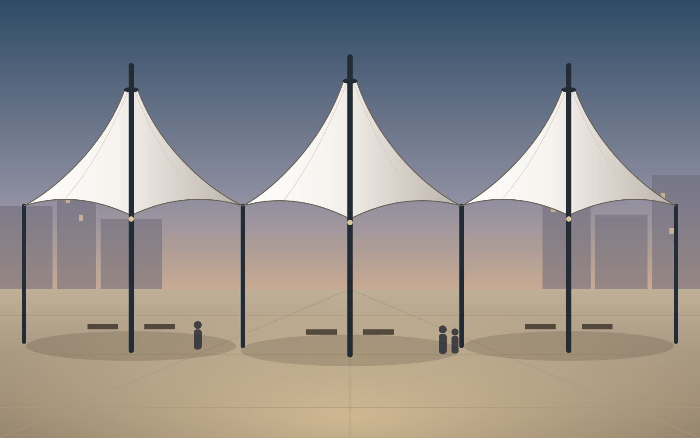
SVC-FACADE-NEXT
Bottom navigation · Next service
TENS-003 Conical membrane canopies (illustration)⚠ placeholder copy
Service · Tensile Fabric Structures /services/tensile-structures/
SVC-TENS-HERO
Page header · Full-width background
TENS-002 Tensile shade sails over a courtyard (illustration)⚠ placeholder copy
SVC-TENS-OVERVIEW
Overview · Image (conical canopies)
TENS-003 Conical membrane canopies (illustration)⚠ placeholder copy
SVC-TENS-SCOPE
Our scope · Image (car-park canopy)
TENS-004 Cantilever car-park canopy (illustration)⚠ placeholder copy
SVC-TENS-PREV
Bottom navigation · Previous service
FACADE-001 Orange Fin Facade OfficeSVC-TENS-NEXT
Bottom navigation · Next service
ARCH-018 Grand Stone-Pier Entrance VillaProjects (portfolio page) /projects/

PROJECTS-HERO
Page header · Full-width background
ARCH-014 Vertical-Fin Timber VillaPROJECTS-STEEL
Steel on site · Image
STEEL-002 Portal Frame ErectionPackages & Estimate /packages/
PACKAGES-HERO
Page header · Side image
HOME-006 Vertical-Fin Timber VillaPACKAGES-ADDON-STR
Specialist scopes · Structural engineering
ARCH-029 Mixed-Use Tower on Terraced PodiumPACKAGES-ADDON-STEEL
Specialist scopes · Steel structures
STEEL-002 Portal Frame ErectionPACKAGES-ADDON-FACADE
Specialist scopes · Facade design
FACADE-001 Orange Fin Facade OfficePACKAGES-ADDON-INT
Specialist scopes · Interior design
INT-001 Double-height living room — 3D interior designOur Process /process/
PROCESS-1
Process stages · 01 Client consultation
PROC-001 Consultation & brief — client meetingPROCESS-2
Process stages · 02 Requirement analysis
PROC-003 3D space layout — furnished floor planPROCESS-3
Process stages · 03 Concept development
PROC-005 3D elevation design modelPROCESS-4
Process stages · 04 Architectural planning
PROC-002 Architectural floor plan modelPROCESS-5
Process stages · 05 Structural engineering
PROC-004 Structural drawings with RCC frame modelPROCESS-6
Process stages · 06 Technical coordination
PROC-006 Approval drawing set — residential G+1PROCESS-7
Process stages · 07 Execution planning
PEB-004 Loading Bays and Dock CanopyPROCESS-8
Process stages · 08 Construction & installation
STEEL-002 Portal Frame ErectionPROCESS-9
Process stages · 09 Quality review
ARCH-027 Stone and Timber Commercial PavilionPROCESS-10
Process stages · 10 Project handover
PROC-008 Construction & handover — keys to the clientQuality /quality/
QUALITY-HERO
Page header · Full-width background
PEB-003 Industrial Facility with Glazed EntranceQUALITY-GATES-1
Three gates of quality · Image 1
PEB-004 Loading Bays and Dock CanopyQUALITY-GATES-2
Three gates of quality · Image 2 (wide)
STEEL-001 Multi-Bay Steel FrameQUALITY-CTA-BG
Engineered to endure (CTA) · Background
PEB-002 PEB Distribution CentreTeam /team/
TEAM-CEO
Leadership · CEO portrait (Surya Prathap)
TEAM-001 Surya Prathap — CEO & FounderEmpty placeholder
TEAM-MEMBER-1
Team photos · Member 1 (Principal Architect)
no imageEmpty placeholder
TEAM-MEMBER-2
Team photos · Member 2 (Structural Engineer)
no imageEmpty placeholder
TEAM-MEMBER-3
Team photos · Member 3 (Project Manager)
no imageTEAM-CTA-BG
Meet the team (CTA) · Background
ARCH-019 Floating-Roof Waterside VillaEmpty placeholder
TEAM-MEMBER-4
Team photos · Member 4 (PEB & Steel Design Lead)
no imageEmpty placeholder
TEAM-MEMBER-5
Team photos · Member 5 (Interior Designer)
no imageEmpty placeholder
TEAM-MEMBER-6
Team photos · Member 6 (Site Engineer)
no imageEmpty placeholder
TEAM-GROUP
Team photos · Group photo (whole team)
no imageCareers /careers/
CAREERS-HERO
Page header · Side image
ARCH-016 Curved Terrace Apartment BuildingContact /contact/
CONTACT-HERO
Page header · Background image
ARCH-027 Stone and Timber Commercial PavilionAll images image library
ARCH-001
Angular White Villa with Louvred Fins
ARCH › Luxury Villas
Used in: SVC-ARCH-DUO-1
ARCH-002
Timber-Frame Corner Residence
ARCH › Modern Houses
Used in: HOME-PROJECTS-1, SVC-ARCH-DUO-2
ARCH-003
Timber and Ivory Duplex
ARCH › Contemporary Houses
Used in: SVC-DB-SUITED
ARCH-004
Stone, Timber and Charcoal Corner Home
ARCH › Modern Houses
Used in: ABOUT-APPROACH-1
ARCH-005
Glass Pavilion Residence
ARCH › Modern Houses
Used in: SERVICES-MOSAIC-2
ARCH-006
Colonnaded Contemporary Villa
ARCH › Luxury Villas
Used in: HOME-PKG-DESIGN

ARCH-007
Framed-Balcony Urban Residence
ARCH › Modern Houses
Used in: not placed
ARCH-008
Cantilevered-Roof Garden Residence
ARCH › Modern Houses
Used in: NAV-SVC-DB, HOME-SVC-DB, SERVICES-LIST-DB, SVC-DB-HERO, SVC-STEEL-PREV

ARCH-009
Planted-Terrace Residence
ARCH › Modern Houses
Used in: not placed
ARCH-010
Compact Timber-Soffit Townhouse
ARCH › Contemporary Houses
Used in: SERVICES-MOSAIC-5, SVC-ARCH-TYPOLOGIES
ARCH-011
Stone and Timber Villa with Plunge Pool
ARCH › Luxury Villas
Used in: HOME-PKG-RES

ARCH-012
Brick Two-Storey Residence
ARCH › Contemporary Houses
Used in: not placed
ARCH-013
Travertine Glass Residence
ARCH › Modern Houses
Used in: ABOUT-HERO
ARCH-014
Vertical-Fin Timber Villa
ARCH › Luxury Villas
Used in: PROJECTS-HERO
ARCH-015
Narrow-Plot Stone Townhouse
ARCH › Contemporary Houses
Used in: HOME-ABOUT-1
ARCH-016
Curved Terrace Apartment Building
ARCH › Residential Buildings
Used in: HOME-PROJECTS-4, SVC-STR-PROCESS, CAREERS-HERO
ARCH-017
Poolside Timber Cantilever Villa
ARCH › Luxury Villas
Used in: HOME-SECTOR-1, ABOUT-CTA-BG
ARCH-018
Grand Stone-Pier Entrance Villa
ARCH › Luxury Villas
Used in: NAV-SVC-ARCH, SERVICES-LIST-ARCH, SVC-ARCH-HERO, SVC-STR-PREV, SVC-TENS-NEXT
ARCH-019
Floating-Roof Waterside Villa
ARCH › Luxury Villas
Used in: ABOUT-PHILOSOPHY, TEAM-CTA-BG
ARCH-020
Infinity-Pool Cantilever Villa
ARCH › Luxury Villas
Used in: NAV-PRJ-RES, HOME-SVC-ARCH
ARCH-021
Evening Pool Pavilion Villa
ARCH › Luxury Villas
Used in: HOME-PROJECTS-FEATURE
ARCH-022
Brick and Glass Retail-Office Block
ARCH › Commercial Buildings
Used in: HOME-SECTOR-2, HOME-PKG-COM
ARCH-023
Corporate Office with Pergola Crown
ARCH › Commercial Buildings
Used in: NAV-PRJ-COM, HOME-PROJECTS-2
ARCH-024
Terraced Green Boutique Building
ARCH › Commercial Buildings
Used in: SERVICES-MOSAIC-4
ARCH-025
Stone Clubhouse with Reflecting Pool
ARCH › Commercial Buildings
Used in: HOME-SECTOR-7, HOME-CTA-BG

ARCH-026
Garden Restaurant Pavilion
ARCH › Commercial Buildings
Used in: not placed
ARCH-027
Stone and Timber Commercial Pavilion
ARCH › Commercial Buildings
Used in: HOME-SECTOR-6, PROCESS-9, CONTACT-HERO

ARCH-028
Colour-Clad Hospitality Pavilion
ARCH › Commercial Buildings
Used in: not placed
ARCH-029
Mixed-Use Tower on Terraced Podium
ARCH › Commercial Buildings
Used in: HOME-SVC-STR, PACKAGES-ADDON-STR
FACADE-001
Orange Fin Facade Office
FACADE › Aluminium Facades
Used in: NAV-SVC-FACADE, HOME-SVC-FACADE, SERVICES-LIST-FACADE, SVC-PEB-NEXT, SVC-FACADE-HERO, SVC-TENS-PREV, PACKAGES-ADDON-FACADE
FACADE-002
Timber and Stone Composite Facade
FACADE › Architectural Facades
Used in: SERVICES-MOSAIC-3, SVC-FACADE-GALLERY-1
FACADE-003
Feature Colour Facade Residence
FACADE › Architectural Facades
Used in: NAV-PRJ-FACADE, HOME-PROJECTS-3, SVC-FACADE-GALLERY-2
FACADE-004
Geometric Mullion Glass Facade
FACADE › Glass Facades
Used in: SVC-FACADE-DETAIL, SVC-FACADE-GALLERY-3
FACADE-005
Timber Rainscreen Central Volume
FACADE › Architectural Facades
Used in: SVC-FACADE-GALLERY-4
PEB-001
Logistics Warehouse with Dock Canopy
PEB › Warehouses
Used in: NAV-SVC-PEB, NAV-PRJ-PKG, HOME-INDUSTRIAL-4, HOME-SECTOR-4, SERVICES-LIST-PEB, SVC-STEEL-NEXT, SVC-PEB-HERO, SVC-PEB-TYPE-1, SVC-FACADE-PREV
PEB-002
PEB Distribution Centre
PEB › Logistics Buildings
Used in: NAV-PRJ-PEB, HOME-SVC-PEB, HOME-SECTOR-5, HOME-PKG-PEB, SERVICES-MOSAIC-1, SVC-PEB-WHATIS, SVC-PEB-TYPE-2, QUALITY-CTA-BG
PEB-003
Industrial Facility with Glazed Entrance
PEB › Factory Buildings
Used in: NAV-PRJ-IND, HOME-INDUSTRIAL-5, HOME-SECTOR-3, SVC-PEB-TYPE-4, QUALITY-HERO
PEB-004
Loading Bays and Dock Canopy
PEB › Logistics Buildings
Used in: HOME-ABOUT-2, HOME-INDUSTRIAL-2, SVC-STEEL-GALLERY-1, SVC-PEB-TYPE-3, PROCESS-7, QUALITY-GATES-1
STEEL-001
Multi-Bay Steel Frame
STEEL › Structural Steel
Used in: NAV-PRJ-STEEL, HOME-INDUSTRIAL-1, SVC-ARCH-NEXT, SVC-STR-HERO, SVC-STEEL-GALLERY-2, QUALITY-GATES-2
STEEL-002
Portal Frame Erection
STEEL › Steel Fabrication
Used in: NAV-SVC-STEEL, HOME-INDUSTRIAL-3, HOME-ENGINEERING, ABOUT-APPROACH-2, SERVICES-LIST-STEEL, SVC-DB-NEXT, SVC-STEEL-HERO, SVC-PEB-PREV, PROJECTS-STEEL, PACKAGES-ADDON-STEEL, PROCESS-8

TENS-001
Steel and Glass Car-Park Canopy
TENS › Car Park Structures
Used in: not placed
INT-001
Double-height living room — 3D interior design
INT › Living Rooms
Used in: NAV-SVC-INT, JOURNEY-STEP-7, SERVICES-LIST-INT, SVC-STR-NEXT, SVC-INT-HERO, SVC-INT-GALLERY-1, SVC-DB-PREV, PACKAGES-ADDON-INT
PROC-001
Consultation & brief — client meeting
PROC › Consultation
Used in: JOURNEY-STEP-1, SVC-INT-GALLERY-4, PROCESS-1
PROC-002
Architectural floor plan model
PROC › Floor Plans
Used in: JOURNEY-STEP-2, SVC-INT-GALLERY-3, PROCESS-4
PROC-003
3D space layout — furnished floor plan
PROC › 3D Visualisation
Used in: JOURNEY-STEP-3, SVC-INT-GALLERY-2, PROCESS-2
PROC-004
Structural drawings with RCC frame model
PROC › Structural Drawings
Used in: NAV-SVC-STR, JOURNEY-STEP-4, SERVICES-LIST-STR, SVC-STR-OVERVIEW, SVC-INT-PREV, PROCESS-5
PROC-005
3D elevation design model
PROC › 3D Visualisation
Used in: JOURNEY-STEP-5, PROCESS-3
PROC-006
Approval drawing set — residential G+1
PROC › Approval Drawings
Used in: JOURNEY-STEP-6, PROCESS-6
PROC-008
Construction & handover — keys to the client
PROC › Construction & Handover
Used in: JOURNEY-STEP-8, SVC-INT-NEXT, PROCESS-10
HOME-001
Garden Restaurant Pavilion
HOME › Hero Slider
Used in: HERO-SLIDE-1
HOME-002
Evening Pool Pavilion Villa
HOME › Hero Slider
Used in: HERO-SLIDE-2
HOME-003
Colour-Clad Hospitality Pavilion
HOME › Hero Slider
Used in: HERO-SLIDE-3
HOME-004
Angular White Villa with Louvred Fins
HOME › Hero Slider
Used in: HERO-SLIDE-4
HOME-005
Timber Rainscreen Residence
HOME › Hero Slider
Used in: HERO-SLIDE-5
HOME-006
Vertical-Fin Timber Villa
HOME › Hero Slider
Used in: HERO-SLIDE-6, PACKAGES-HERO
HOME-007
Orange Fin Facade Office
HOME › Hero Slider
Used in: HERO-SLIDE-7
HOME-008
Poolside Timber Cantilever Villa
HOME › Hero Slider
Used in: HERO-SLIDE-8
TENS-002
Tensile shade sails over a courtyard (illustration)
TENS › Shade Sails
Used in: NAV-SVC-TENS, HOME-SVC-TENS, SERVICES-LIST-TENS, SVC-ARCH-PREV, SVC-TENS-HERO
⚠ Illustration (SVG). Replace with a real project photograph when available — the ID and placements stay the same.
TENS-003
Conical membrane canopies (illustration)
TENS › Conical Canopies
Used in: SVC-FACADE-NEXT, SVC-TENS-OVERVIEW
⚠ Illustration (SVG). Replace with a real project photograph when available — the ID and placements stay the same.
TENS-004
Cantilever car-park canopy (illustration)
TENS › Car Park Structures
Used in: NAV-PRJ-TENS, HOME-SECTOR-8, HOME-PKG-TENS, SVC-TENS-SCOPE
⚠ Illustration (SVG). Replace with a real project photograph when available — the ID and placements stay the same.
TEAM-001
Surya Prathap — CEO & Founder
TEAM › Leadership
Used in: ABOUT-CEO, TEAM-CEO